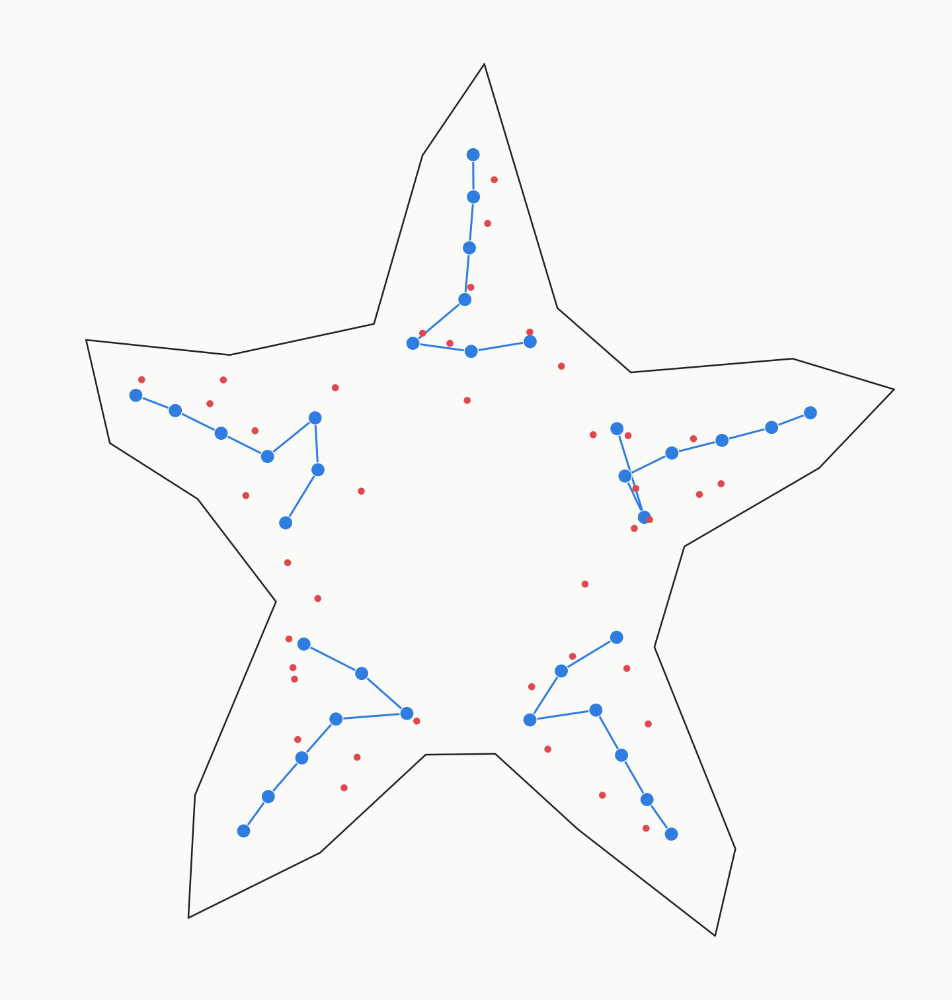

<title>Tentacle flank LEDs — placement check</title>
<style>
  :root{ --bg:#f6f4f0; --panel:#ffffff; --ink:#1c1b19; --ink-dim:#6b6560; --rule:#ddd7cd; --blue:#2f7dde; --red:#e0484f; }
  @media (prefers-color-scheme: dark){
    :root{ --bg:#17191b; --panel:#1f2225; --ink:#ece8e1; --ink-dim:#9a948c; --rule:#34383c; --blue:#5b9eef; --red:#f0696f; }
  }
  :root[data-theme="dark"]{ --bg:#17191b; --panel:#1f2225; --ink:#ece8e1; --ink-dim:#9a948c; --rule:#34383c; --blue:#5b9eef; --red:#f0696f; }
  :root[data-theme="light"]{ --bg:#f6f4f0; --panel:#ffffff; --ink:#1c1b19; --ink-dim:#6b6560; --rule:#ddd7cd; --blue:#2f7dde; --red:#e0484f; }
  *{box-sizing:border-box;}
  body{ margin:0; background:var(--bg); color:var(--ink); font-family: ui-sans-serif, system-ui, -apple-system, "Segoe UI", sans-serif; display:flex; justify-content:center; padding:2.5rem 1.25rem 4rem; }
  main{ width:100%; max-width:52rem; display:flex; flex-direction:column; gap:1.25rem; }
  h1{ font-family: ui-monospace, "SFMono-Regular", Menlo, Consolas, monospace; font-size:1.1rem; letter-spacing:0.02em; font-weight:600; margin:0; text-wrap:balance; }
  .sub{ color:var(--ink-dim); font-size:0.95rem; max-width:40rem; line-height:1.55; }
  figure{ margin:0; background:var(--panel); border:1px solid var(--rule); border-radius:4px; padding:0.75rem; }
  figure img{ display:block; width:100%; height:auto; border-radius:2px; }
  figcaption{ margin-top:0.6rem; font-size:0.82rem; color:var(--ink-dim); display:flex; gap:1.5rem; flex-wrap:wrap; }
  .legend-dot{ display:inline-block; width:0.7em; height:0.7em; border-radius:50%; margin-right:0.4em; vertical-align:middle; }
  .dot-blue{background:var(--blue);} .dot-red{background:var(--red);}
  .panel{ background:var(--panel); border:1px solid var(--rule); border-radius:4px; padding:1rem 1.25rem; }
  ul{ margin:0; padding-left:1.1rem; color:var(--ink-dim); font-size:0.9rem; line-height:1.6; }
  li b{ color:var(--ink); font-weight:600; }
</style>
<main>
  <h1>8 flanking 0402s per tentacle, RGB chain unmoved</h1>
  <p class="sub">
    For each of the 7 RGB positions, found the nearest small (unhighlighted) silkscreen dot to
    its left and right (perpendicular to the local chain direction), then kept the best 8 per
    arm &mdash; so coverage spreads across most of the 7 positions rather than clustering at one
    spot. All matches land within 8&nbsp;mm of their RGB neighbor; most under 4&nbsp;mm.
  </p>

  <figure>
    
    <figcaption>
      <span><span class="legend-dot dot-blue"></span>RGB chain (unmoved)</span>
      <span><span class="legend-dot dot-red"></span>flanking 0402, snapped to an existing silkscreen dot</span>
    </figcaption>
  </figure>

  <div class="panel">
    <ul>
      <li>Distribution isn't perfectly symmetric L/R or across all 7 positions &mdash; it follows
        wherever the existing artwork actually has a nearby dot, since the pattern itself isn't
        perfectly even arm-to-arm.</li>
      <li><b>arm_left</b> leans mostly to one side (the artwork has fewer dots on its other side
        near the chain) &mdash; worth a glance if you want it more balanced.</li>
      <li>None of the 40 flank LEDs reuse a silkscreen dot already claimed by another flank or by
        the RGB chain.</li>
    </ul>
  </div>

  <p class="sub">
    If this looks right, next step is pushing all 40 (8&times;5) flank LEDs plus the 235-LED
    ring matrix to the live board via the IPC API, alongside the unmoved RGB tentacle chains.
  </p>
</main>
